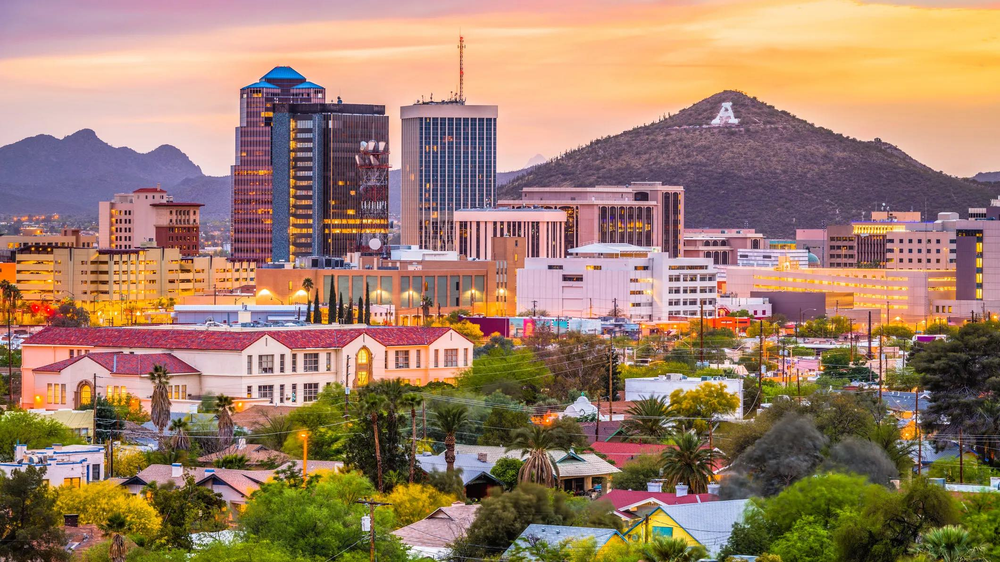

Home
Phoenix
Tucson
Scottsdale
Contact
Tucson, Arizona 
One City, One Team
The Old Pueblo
City
Population
Year of Incorporation
Region
Classification
Avg State Income Level
Tucson
546,574
1877
Southern
Urban
Below the state average